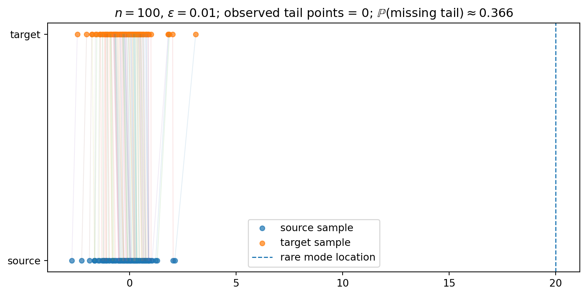
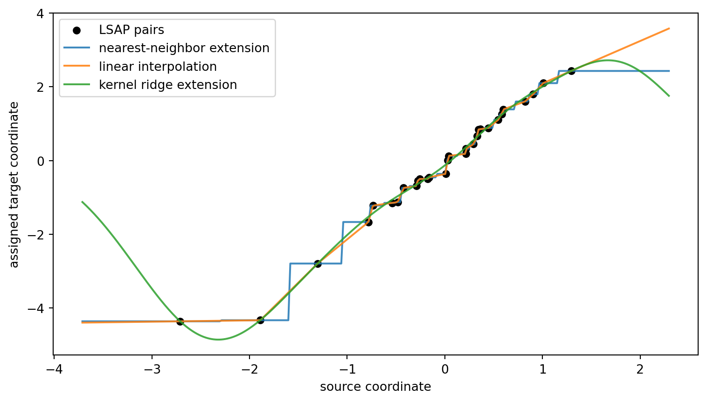
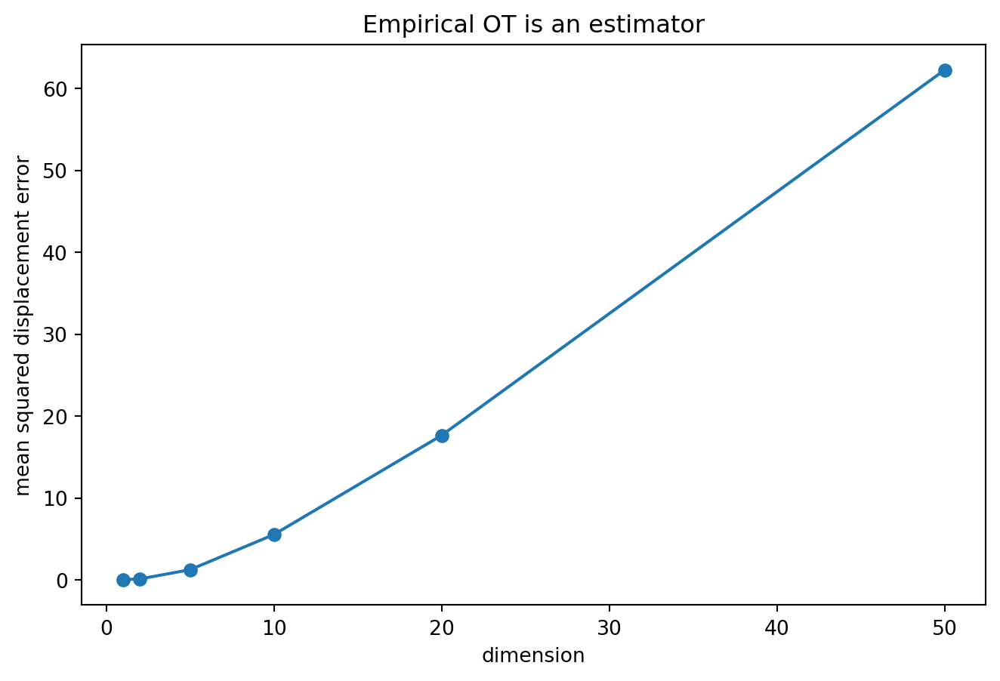

2026-05-11
The linear sum assignment problem has a clean promise. Given two point clouds of the same size, it matches every source point to one target point and minimizes total cost. At the finite level, there is no ambiguity. If
\hat\mu_n = \frac{1}{n}\sum_{i=1}^n \delta_{x_i}, \qquad \hat\nu_n = \frac{1}{n}\sum_{j=1}^n \delta_{y_j},
then an optimal assignment returns a permutation \sigma, and the empirical map x_i \mapsto y_{\sigma(i)} pushes the empirical source sample exactly onto the empirical target sample.
That statement is correct. The question is what it means.
The assignment is exact for \hat\mu_n and \hat\nu_n. It is not automatically a map from \mu to \nu. It is not automatically a generative rule for new points. LSAP solves the finite matching problem; it does not, by itself, learn a population transport rule. The distinction matters most in tail-risk problems, where a rare target region can have small probability and large consequence — and if that region is absent from the finite target sample, LSAP still returns an exact empirical assignment, just one with no target atom in the rare region.
In the finite equal-mass setting, two point sets X = \{P_1,\ldots,P_m\} and Y = \{N_1,\ldots,N_m\} with cost function c: X \times Y \to \mathbb{R} give rise to the finite Monge problem
M = \min_{\sigma \in S_m} \sum_{i=1}^m c(P_i, N_{\sigma(i)}).
This is the linear assignment problem. The Kantorovich relaxation is over doubly stochastic matrices:
K = \min_A \left\{ \sum_{i,j=1}^m a_{ij}c(P_i,N_j): A=(a_{ij})\text{ is doubly stochastic} \right\}.
In the finite equal-mass setting, the Monge value, Kantorovich value, and dual value coincide:
M = K = D.
This is the right finite conclusion: in the equal-weight finite setting, LSAP solves empirical discrete optimal transport. But the theorem is finite. It does not say that a permutation learned from two random samples is a population OT map. It does not define what happens to a new point. It does not add missing tail mass. The population interpretation is the extra step.
For a cost c, LSAP solves
\min_{\sigma \in S_n} \frac{1}{n}\sum_{i=1}^n c(x_i, y_{\sigma(i)}).
Given a permutation \sigma, define T_n(x_i)=y_{\sigma(i)}. Then T_{n\#}\hat\mu_n = \hat\nu_n — for any measurable set A:
T_{n\#}\hat\mu_n(A) = \frac{1}{n}\sum_{i=1}^n \mathbf{1}\{y_{\sigma(i)} \in A\} = \frac{1}{n}\sum_{j=1}^n \mathbf{1}\{y_j \in A\} = \hat\nu_n(A),
where the second equality uses that \sigma is a permutation. This is exactly what LSAP gets right — and exactly where it stops.
A population transport map is a measurable function T: \mathcal{X} \to \mathcal{Y} with T_\#\mu = \nu. The LSAP output is a finite table:
x_1 \mapsto y_{\sigma(1)}, \ldots, x_n \mapsto y_{\sigma(n)}.
For a new point x, LSAP alone has no answer.
If \mu is continuous, then \mu(\{x_1,\ldots,x_n\})=0 — the empirical assignment is defined only on a set of population measure zero. Without an extension rule, T_{n\#}\mu is not a well-defined population pushforward. Any out-of-sample map comes from an additional choice: nearest-neighbor extension, interpolation, kernel regression, a neural network, a parametric model. That choice may be useful, but it is no longer LSAP alone.
Consider a target distribution with a rare region A where \nu(A)=\varepsilon. A useful mental model is a well-separated mixture like \nu = 0.99\,N(0,1) + 0.01\,N(20,1). Draw Y_1,\ldots,Y_n \sim \nu. Then
\mathbb{P}\{\hat\nu_n(A)=0\} = (1-\varepsilon)^n.
For \varepsilon=0.01 and n=100,
(0.99)^{100} \approx 0.366.
With one hundred target samples, a one-percent rare region is absent with probability about 37%. LSAP cannot match to a target atom that is not present — the empirical assignment is still exact, but it has nothing in A.
When missing A carries consequence C_A, the contribution from this event is of order
C_A(1-\varepsilon)^n.
Small probability is not the same as small consequence.

The plot is not a solver benchmark. It only shows the sampling issue. If the target sample contains no rare atom, the assignment cannot invent one. If it contains one or two, the finite assignment sends exactly that many source atoms into the rare region.
LSAP assigns values only at the observed source atoms. Different extensions can agree on the assigned pairs and disagree everywhere else.

The three curves are not three versions of LSAP. They are three choices made after the assignment.
There is a simple case where the population OT map is known. Let \mu=N(0,I_d), \nu=N(a,I_d), with quadratic cost. The population OT map is
T^\star(x)=x+a.
Now draw independent samples X_1,\ldots,X_n\sim\mu and Y_1,\ldots,Y_n\sim\nu. LSAP returns a permutation \sigma_n.
If the empirical assignment recovered the population map exactly, we would need Y_{\sigma_n(i)}=X_i+a for every i. But with probability one,
\{Y_1,\ldots,Y_n\} \ne \{X_1+a,\ldots,X_n+a\},
so no finite-sample permutation can equal the population map except in a probability-zero coincidence.
A useful diagnostic is
\frac{1}{n}\sum_{i=1}^n \left\|Y_{\sigma_n(i)} - X_i - a\right\|^2,
which measures how far the empirical LSAP displacement is from the known population displacement.

Empirical OT is not useless. The claim is smaller: it is an estimator, and exact optimization does not remove sampling error.
LSAP solves finite empirical discrete OT between equal-weight point clouds. That is what it does, and it does it exactly. What is not automatic is that it learns a population OT map or a generative transport rule.
The gap shows up in three places. First, the assignment is defined only on the observed source atoms — a set of population measure zero for any continuous source. Second, rare target regions can be absent from the empirical sample with non-negligible probability, and on that event the exact assignment simply has nothing to send there. Third, even in a Gaussian shift model where the population OT map is known, an exact finite assignment does not recover it from independent samples.
So the practical question is not whether LSAP solved the assignment problem — it did. The question is whether the empirical assignment contains enough information to define the population transport needed for the task. When the answer is no, exact matching is the wrong comfort.
This note is not a comparison of solvers — not a critique of the Hungarian algorithm, Jonker–Volgenant methods, auction algorithms, or exact assignment algorithms in general. The point is simpler: an exact solver can solve the sampled problem exactly while the sampled problem still omits a rare but important part of the target distribution.
\text{solver exactness} \quad\ne\quad \text{population validity}.
The LSAP objective returns an optimal value; the selected permutation need not be unique. Take X=\{0,0\}, Y=\{-1,1\} with squared cost. Both assignments have total cost 2, so both are optimal and a solver must pick one arbitrarily.
There is also a small instability example. Let X=\{0,1\} and
Y_\delta = \left\{\frac{1}{2}-\delta,\frac{1}{2}+\delta\right\}
with squared cost. For \delta>0 one assignment is optimal; for \delta<0 the swapped one is; at \delta=0 they tie. The value changes smoothly — the assignment can change discontinuously. LSAP can be stable as a value while unstable as a map.
The formulation above assumes two finite point clouds of the same size with equal atom weights. In this special case the finite Kantorovich problem reduces to linear assignment. If the empirical weights are not equal, or the point clouds have different sizes, the one-to-one assignment formulation is no longer the general finite OT problem.
Rectangular assignment routines do not change this point. A rectangular LSAP returns an optimal matching of cardinality \min(n,m), leaving atoms on the larger side unmatched. That can be a useful combinatorial problem, but it is not the same as transporting all of one empirical probability measure onto the other.
The finite Kantorovich problem is then a transportation linear program:
\min_{\pi_{ij}\ge 0} \sum_{i,j} c(x_i,y_j)\pi_{ij}
subject to
\sum_j \pi_{ij}=a_i, \qquad \sum_i \pi_{ij}=b_j,
where
a_i\ge 0,\qquad b_j\ge 0,\qquad \sum_i a_i=\sum_j b_j=1.
Here mass may need to split. A permutation cannot represent that in general.
A minimal example is \mu=\delta_0 and \nu=\frac12\delta_{-1}+\frac12\delta_1. A deterministic assignment from the single source atom must send all mass to either -1 or 1. It cannot push \delta_0 to a measure splitting mass equally between both target points. The Kantorovich plan can:
\pi(0,-1)=\frac12, \qquad \pi(0,1)=\frac12.
Equal weights are not a cosmetic assumption; they are what make finite OT reduce to LSAP.
Under squared Euclidean cost, the LSAP solution defines a coupling
\pi_n = \frac{1}{n}\sum_{i=1}^n \delta_{(x_i,y_{\sigma(i)})},
from which one can form the displacement interpolation
\hat\mu_{n,t} = \frac{1}{n}\sum_{i=1}^n \delta_{(1-t)x_i + t\,y_{\sigma(i)}}, \qquad 0\le t\le 1.
When the cost is squared Euclidean and the coupling is optimal for W_2, this is the empirical Wasserstein geodesic between the two empirical measures. But it is still empirical — a curve from \hat\mu_n to \hat\nu_n, not from \mu to \nu. If the target sample misses a rare region A, the endpoint \hat\nu_n misses it, and the interpolation inherits that. LSAP can induce an empirical Wasserstein geodesic under the right geometry; it is not a population geodesic.
The diagnostic code uses SciPy’s linear_sum_assignment with squared Euclidean costs. The experiments are small illustrations of the gap between exact empirical matching and population transport, not solver benchmarks.
Dimitri P. Bertsekas. “The auction algorithm: A distributed relaxation method for the assignment problem.” Annals of Operations Research 14, 1988.
Haim Brezis. “Remarks on the Monge–Kantorovich problem in the discrete setting.” Comptes Rendus Mathématique 356(2), 2018.
Roy Jonker and Anton Volgenant. “A shortest augmenting path algorithm for dense and sparse linear assignment problems.” Computing 38, 1987.
Harold W. Kuhn. “The Hungarian method for the assignment problem.” Naval Research Logistics Quarterly 2(1–2), 1955.
James Munkres. “Algorithms for the assignment and transportation problems.” Journal of the Society for Industrial and Applied Mathematics 5(1), 1957.
Gabriel Peyré and Marco Cuturi. “Computational Optimal Transport.” Foundations and Trends in Machine Learning 11(5–6), 2019.
Cédric Villani. Optimal Transport: Old and New. Springer, 2009.
@misc{miryusupov2026exactmatching,
author = {Miryusupov, Shohruh},
title = {When exact matching is the wrong comfort},
year = {2026},
howpublished = {Research note},
url = {https://www.miryusupov.com/blog/posts/when_exact_matching_is_the_wrong_comfort/index.html}
}